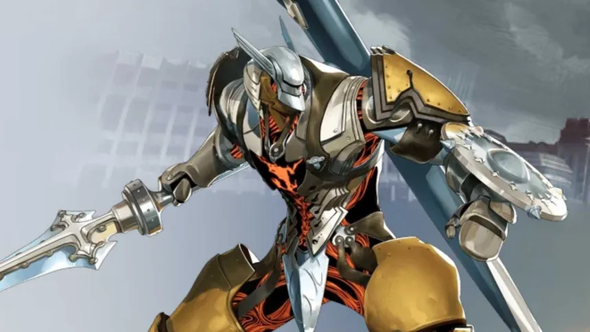
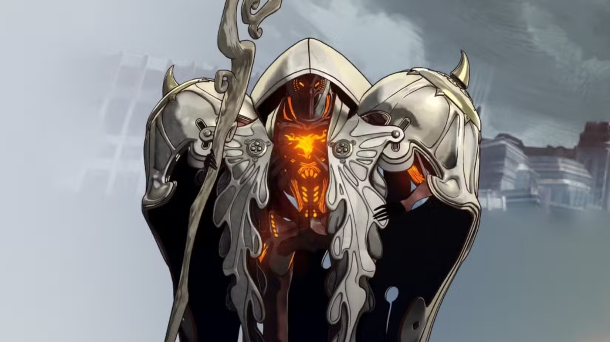

El Grimorio de Euchronia
Bienvenido al compendio analítico y sistema de simulación táctica de los hilos de magla del reino. Explora los linajes de combate, las habilidades de los agentes y proyecta sus capacidades en batalla.
Bienvenido al compendio analítico y sistema de simulación táctica de los hilos de magla del reino. Explora los linajes de combate, las habilidades de los agentes y proyecta sus capacidades en batalla.

El Buscador de Caminos

La Fuerza Bruta

El Maestro de Magla